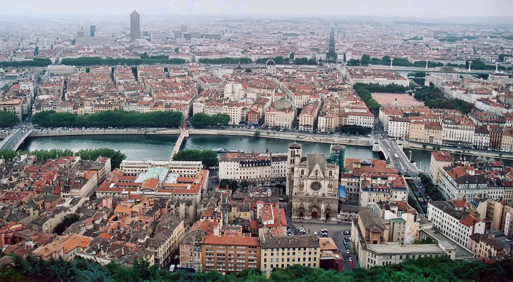

Classification de la végétation par dalles de 500m × 500m.
-- / 2588
574.89 Go
-- / 647 km²
-- %
Glissez le curseur pour voir ce que l'algorithme détecte (Masque binaire).
Les pixels sont d'abord isolés par couleur (masque HSV). Le moteur applique ensuite un filtre de texture (Canny) combiné à une fermeture morphologique.
Cela permet de valider la rugosité de la canopée et de fusionner les arbres en massifs cohérents tout en éliminant les faux positifs lisses comme les piscines, les terrains de sport ou les pelouses rases.